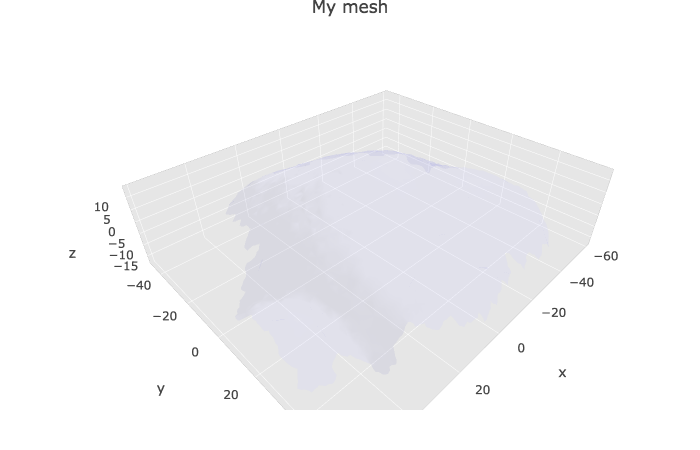
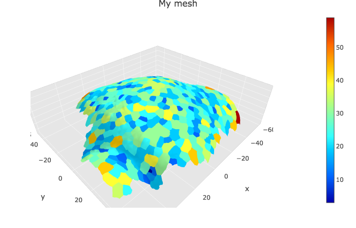
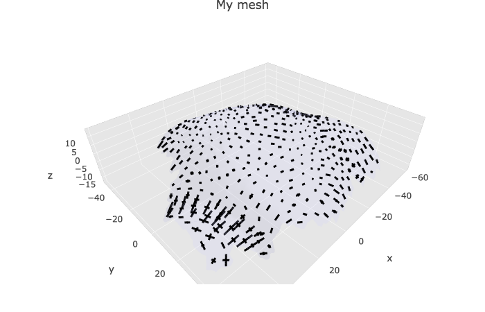
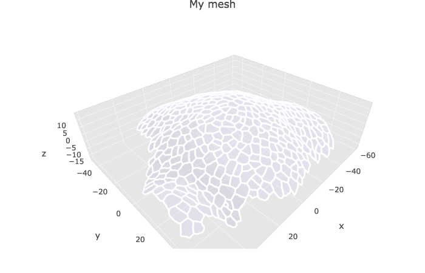

Vignette mgx2r - basics
Marion Louveaux
2018-10-18
Source:vignettes/vignette_basics.Rmd
vignette_basics.RmdThe goal of this vignette is to explain how to use the mgx2r package and give example of data visualisation with Plotly. It introduces the modified_read.ply() and modified_read.cellGraph() functions that allow to read the .ply files generated by MorphoGraphX and to use further their content, for instance, by visualising the mesh(es) or by doing statistics on the cell graph dataframes. For time serie visualisation, see the time serie vignette.
N.B: this package also include a function to write an R 3D object as a .ply mesh readable by MorphoGraphX, but I will not talk about it in this vignette.
Librairies needed
This vignette requires the mgx2r package, as well as some other additionnal packages. Plotly is a package for displaying 3D interactive graphs, the other packages are needed for colors (colorRamps and RColorBrewer), and for coding (magrittr, dplyr and glue).
Loading data
Some .ply demonstration data coming from my PhD thesis are attached to this package and used here in the vignette. This dataset is a timelapse recording of the development of a shoot apical meristem of the plant expressing a membrane marker. I took one 3D stack every 12h and have 5 timepoints in total. For more information regarding the generation of this dataset, see help.search("mgx2r-package").
Here, in this first vignette, we I will select the first timepoint only. I have one .ply for the mesh and one .ply for the cellGraph.
### Full datataset
filePly <- system.file("extdata", "full/mesh/mesh_meristem_full_T0.ply", package = "mgx2r")
fileCellGraph <- system.file("extdata", "full/cellGraph/cellGraph_meristem_full_T0.ply", package = "mgx2r")As generating following plots with the full dataset might be slow, you can try with the cropped dataset.
Mesh and cell graph (e.g. cells and edges properties)
I load the .ply mesh with the modified_read.ply() function. This function is a modified version of read.ply function from geomorph R package to specifically read MGX ply files. I takes in account the fact that each triangular face of the mesh can get several colors (one for the label, one for the fluorescent signal projected on the mesh -membrane or microtubules-…).
mgx_palette <- c("#800000", "#FF0000", "#808000", "#FFFF00",
"#008000", "#00FF00", "#008080", "#00FFFF",
"#000080", "#0000FF", "#800080", "#FF00FF")
myMesh <- read_mgxPly(
file = filePly, ShowSpecimen = FALSE, addNormals = TRUE,
MatCol = 1, header_max = 30, my_colors = mgx_palette)
#> [1] "Object has 7763 faces and 4158 vertices."
str(myMesh, max.level = 1)
#> List of 7
#> $ vb : num [1:4, 1:4158] -55 31.5 -3.2 1 -51.3 ...
#> ..- attr(*, "dimnames")=List of 2
#> $ it : num [1:3, 1:7763] 1 3040 3041 1 3041 ...
#> ..- attr(*, "dimnames")=List of 2
#> $ primitivetype: chr "triangle"
#> $ material :List of 2
#> $ allColors :List of 4
#> $ it_label :Classes 'tbl_df', 'tbl' and 'data.frame': 7763 obs. of 1 variable:
#> $ normals : num [1:4, 1:4158] -0.322 0.196 0.906 1 -0.36 ...
#> ..- attr(*, "dimnames")=List of 2
#> - attr(*, "class")= chr [1:2] "mesh3d" "shape3d"Over the rest of the vignette I will only show examples of visualisation with Plotly, but there is another 3D library in R called RGL.
To change mesh color and display the new color, you can use the following command.
Information relative to cells and cell walls (resp. vertices and edges of the cell graph) are stored in a second .ply that I read with the modified_read.cellGraph() function that I wrote myself. The modified_read.cellGraph() function reads the cell graph .ply and extract two dataframes (one for the vertices informations and one for the edges informations). These two dataframes are then combined into a list.
myCellGraph <- read_mgxCellGraph(fileCellGraph = fileCellGraph, header_max = 30)
myCellGraph
#> $vertices
#> # A tibble: 376 x 15
#> label x y z GeometryArea CellAxiscurv10m…
#> <int> <dbl> <dbl> <dbl> <dbl> <int>
#> 1 3 -55.0 31.5 -3.20 33.5 9
#> 2 7 -51.3 18.6 0.0779 46.8 9
#> 3 6 -50.4 24.8 -0.0119 27.2 9
#> 4 5 -53.1 26.9 -1.39 19.7 9
#> 5 2 -51.4 37.0 -4.00 38.4 9
#> 6 1 -49.7 41.5 -6.23 35.4 9
#> 7 18 -46.9 -10.5 -6.18 40.5 9
#> 8 11 -48.0 6.85 -0.224 22.5 9
#> 9 8 -47.8 12.5 1.07 27.9 9
#> 10 4 -49.5 31.8 -1.64 28.1 9
#> # ... with 366 more rows, and 9 more variables:
#> # CellAxiscurv10microns.1 <dbl>, CellAxiscurv10microns.2 <dbl>,
#> # CellAxiscurv10microns.3 <dbl>, CellAxiscurv10microns.4 <dbl>,
#> # CellAxiscurv10microns.5 <dbl>, CellAxiscurv10microns.6 <dbl>,
#> # CellAxiscurv10microns.7 <dbl>, CellAxiscurv10microns.8 <dbl>,
#> # CellAxiscurv10microns.9 <int>
#>
#> $edges
#> # A tibble: 2,160 x 2
#> source target
#> <int> <int>
#> 1 3 5
#> 2 3 4
#> 3 3 2
#> 4 7 8
#> 5 7 9
#> 6 7 98
#> 7 7 6
#> 8 6 5
#> 9 6 7
#> 10 6 98
#> # ... with 2,150 more rowsN.B.: to see the content of one of these function, just type its name without the parentheses.
Last but not least, I am retrieving the location of the cell centers to display the cell ID at their location.
meshCellcenter <- myCellGraph$vertices[,c("label","x", "y", "z")]
# An other way to define the cell centers without using the cell graph would be: ## issue with the code below
# vertexCellcenter <- purrr::map(1:ncol(myMesh$allColors$Col_label), ~
# myMesh$it[ which(myMesh$allColors$Col_label[,.x] == names(which(table(myMesh$allColors$Col_label[,.x]) == 1))), .x ]
# )Displaying the mesh with plotly
To display the mesh with cell labels
p1 <- plotlyMesh(meshExample = myMesh,
meshColors = myMesh$allColors$Col_label,
meshCellcenter = meshCellcenter) %>%
layout(scene =
list(
aspectmode = "data"
))
p1 Colors of the cell labels are set from the HEX color codes stored in
Colors of the cell labels are set from the HEX color codes stored in myMesh$allColors$Col_label. There is always three colors: one per vertex. Two are identica, and usually black with MGX (“#000000” HEX code).
Without the cell labels
plotlyMesh(meshExample = myMesh,
meshColors = NULL,
meshCellcenter = meshCellcenter)%>%
layout(scene =
list(
aspectmode = "data"
))
Default color of the mesh and opacity are set in the defaultColor parameter of the plotlyMesh() function (see ?plotlyMesh for more informations).
Displaying specific info from cellGraph on the mesh
The cell graph contains many information that can be added to the 3D visualisation of the mesh. I classified these information in two categories: scalars (e.g. numbers, such as growth rate, area…) and tensors (microtubule orientation, growth directions, curvature…). Below I give two examples, one with the areas and one with the principal direction of growth. If my scripts are correct, I should be able to display any scalar as for area, and any tensors, as for the principal direction of growth.
Scalar info (area, growth rate…)
p2 <- plotlyMesh(meshExample = myMesh,
meshColors = left_join(myMesh$it_label, myCellGraph$vertices) %>%
select(., GeometryArea),
meshCellcenter = meshCellcenter
) %>%
layout(scene =
list(
aspectmode = "data"
))
p2
Vector/tensor info (principal dir of curvature…)
This part of the code is quite new and provide tools to visualise tensors, such as growth direction or curvature direction on any kind of mesh (without label, with cell label, with heatmap colors…), as long as it is already converted to a plot with plotlyMesh. The code below has not been tested extensively yet.
meshPlotly <- plotlyMesh(meshExample = myMesh,
meshColors = NULL,
meshCellcenter = meshCellcenter) %>%
layout(scene =
list(
aspectmode = "data"
))
show_tensors(p = meshPlotly,
cellGraph = myCellGraph,
tensor_name = "CellAxiscurv10microns",
scale = 50)
Drawing cell contours
As some may be also interested by drawing the cell contours, I have added an example here. This kind of graph is quite ressource consuming, as it is drawing each edge one by one, as a segment. Here in this example, there is 5151 edges. This could be useful if you are looking at the accumulation of a given protein (for instance PIN1) at the membrane. The information would be stored in the edges dataframe of the cell graph and I could use it to make a heatmap on the cell contours.
meshPlotly <- plotlyMesh(meshExample = myMesh,
meshColors = NULL) %>%
layout(scene =
list(
aspectmode = "data"
))
show_cellcontour(p = meshPlotly, mesh = myMesh)